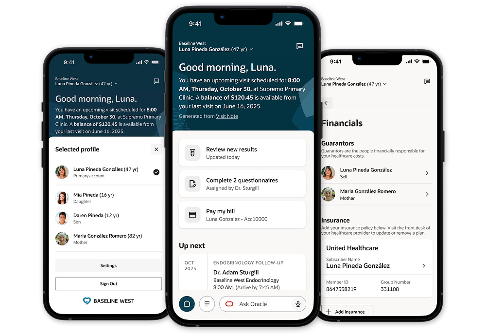
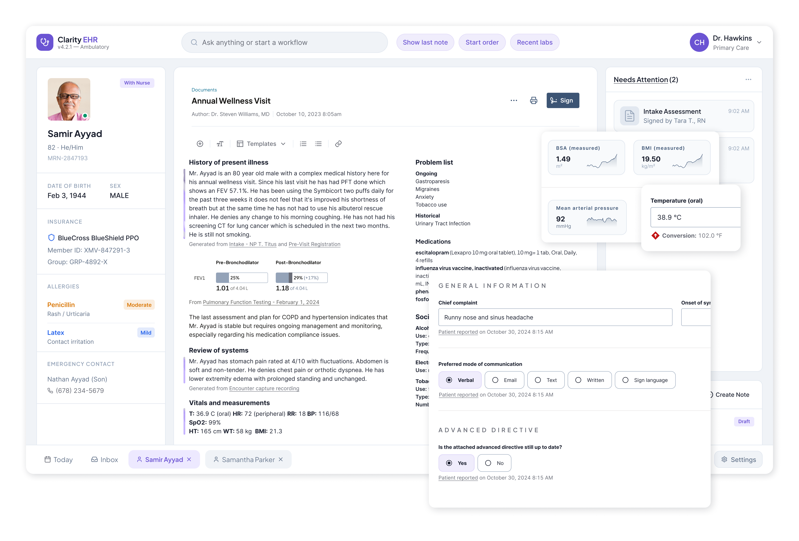
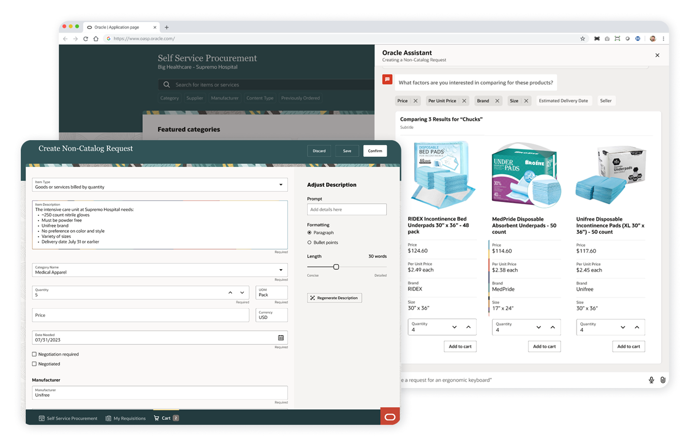
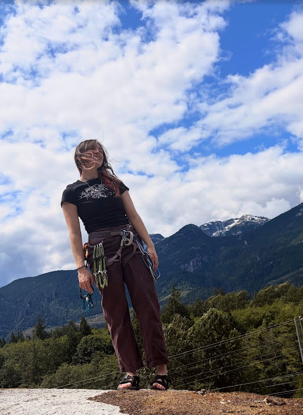
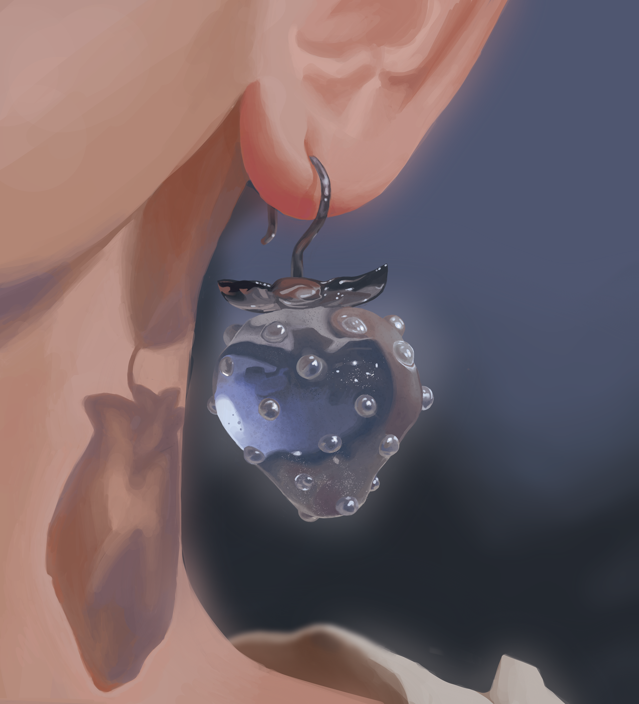
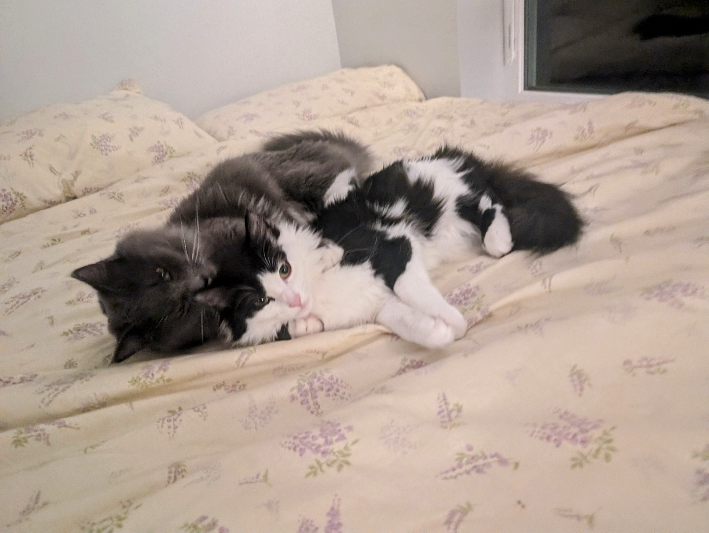

Launching an AI-first patient portal, from zero to App Store in four months.

- <4 mo project start to GA release
- 13 users validated my proxy messaging model
- 100% design parity at GA

evie mitchell
ux designer ii @ 🔮 oracle health
hi there! ✨ i'm a designer with 3 years of experience building AI-powered healthcare products, working on both clinical and patient-facing applications.
what i've been working on ⬇




Healthcare workers carry an impossible cognitive load; railroad crews make critical safety decisions every hour. Across industries, workers deserve tools that lighten that burden, and support human decision-making without ever replacing it.
Software pervades our lives and livelihoods, and the hours we spend with it are only growing each day. I build products to make important work faster and easier, so we can spend more time on what matters most.
My design practice is fueled by spending time outdoors...

... and inspired by visual art.

And when I'm working remotely, I have two invaluable assistants - Ziti and Gnocchi!

thanks for sticking around! ◝(⑅•ᴗ•⑅)◜ say hi on linkedin or email <3